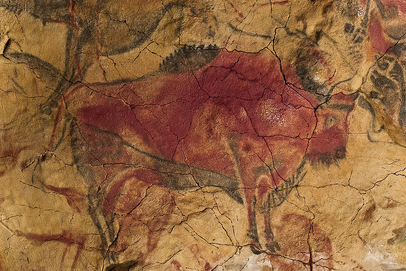
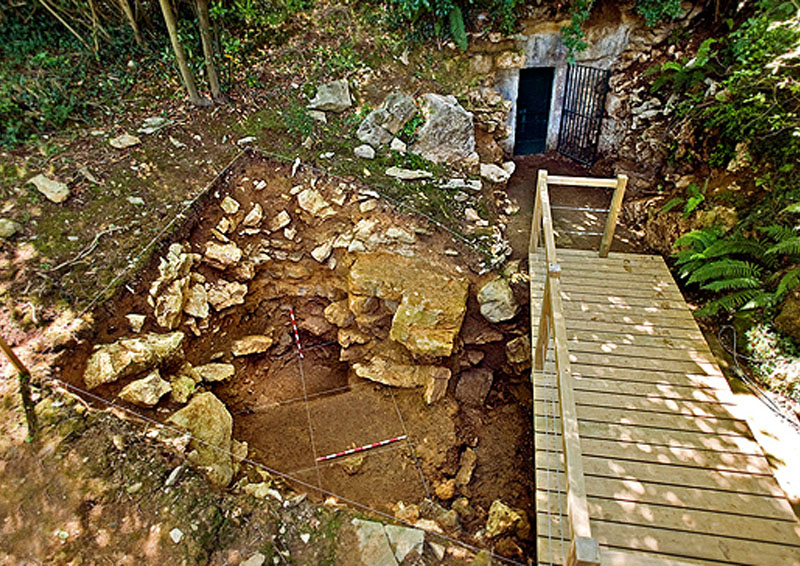
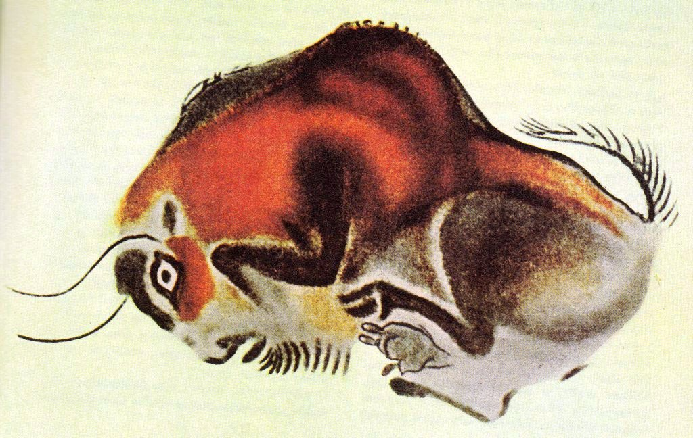
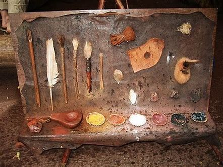

The paintings of the Altamira cave is estimated to be 36,000 years old. Which makes them the oldest paintings in the human history. This is not only valuable to the historians. These arts are the proof of human creativity is far more ancient than human thinks it is. They allow modern day artisits' to study the ancient pattern and tatics of painting and technics of creating paint. Also this is valuable for study the the ancient human creativity.


The cave of Altamira is found by amateur archaeologist Marcelino Sanz de Sautuola at 1879 in Spain. The cave was discovered by his 8 years old daughter and Maria.
The cave belongs to aleolithic or otherwise known as Old Stone Age period. The cave is 1,000m long. The excavations in the cave led to the founding of rich deposits of artifacts from the Upper Solutrean and Lower Magdalenian. The main passage is 2m to 6m in height.
There are many paintins found in the Altamira cave. Each of these paintings represents unique styles and techniques. The most famous painting is the bisons. This Altamira Bison became one of the cultural impact in the Spain. A modern interpretation of the bison is used as a logo in the spanish government and tourism based business. Besides bisons there are paintings of boars, deers, horses and some other geometric signs and symbols


The ancient humans of Altamira had a strong techniques and surprising ways of making painting materials. They used manganese, charcoal, haematite, geothite, ochre, plant juices, animal blood and saliva as materials. Also they used pads of moss or hair, blocks of raw colours as painting equipments.
The most famous fact about the Altamira is that they developed a method to painting by spraying. Otherwise they used brushes to draw and paint and stones to carve the rock.
Media Content Aboout Altamira